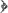
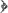

| Monday, 18 August 2025 |
|
|
|
|
Never see Ash'ariyyah in the same light, ever again! Aristotle of Stageira, Philo of Alexandria, Augustine of Hippo, the Sabeans of Harraan, the Mu'tazilites of Basrah and Baghdad and the Jahmite Ash'ari Heretics of Today Claiming Orthodoxy. Read the first article, the second article, the third article, the fourth article, the fifth article.
| |
You are here:
Home  The Clinic
The Clinic
Just in! Third case of "Ash'ari Burnout". To learn more please see this page. "Ash'ari Burnout" is a phenomenon arising when the inability to satisfactorily resolve and come to terms with certain (historical) facts and information results firstly in "psychological denial" which disturbs the mental constitution, then denial of the denial secondly, and then finally, barely comprehensible, illogical, irrational "outbursts" taking place mainly on blogs and forums.
Introduction And Backround Information For the Case This case is fresh, and has just been reported. It appears a lone As'hari Burnout victim is letting loose and regurgitating the mutterings of the ancient Jahmites - [that the likes of Fudayl bin 'Iyaad (d. 187H) and Hammaad bin Zayd (d. 179H) and Ishaaq bin Raahawaih (d. 238H) had to deal with in the late second and early third century hijrah - see their quotes in this article] - so he's making these mutterings with a view to arguing the case for the Aristotelian Tawheed that is centered around the notions of al-jawhar (substance) and al-'arad (incidental attribute) - these terminologies and classifications being the foundations of a [flawed, corrupt] intellectual proof called "hudooth ul-ajsaam" that is used to demonstrate that all the bodies (ajsaam) that make up the universe are a bunch of events (hawaadith) because they have incidental attributes (a'raad) and occurrences (hawaadith) that take place in them, and since occurrences (hawaadith) must have a beginning, there must be an originator for these events, a creator. And once this is established, prophethood can now be argued for as can resurrection against those same atheists from whom this language and terminology was borrowed in the first place. And since they treated this proof to be the ultimate truth upon which the veracity of the religion itself depends upon, they are forced to make all of their speech regarding Allaah to be nothing but a series of negations based around these same terms. Ibn Suraij as-Shafi'ee (d. 306H) said, as narrated from him by Abu Ismaa'eel al-Harawi in "Dhamm ul-Kalaam" and as mentioned by Ibn Taymiyyah in "Bayaan Talbees al-Jahmiyyah":
توحيد اهل العلم وجماعة المسلمين أشهد أن لا اله الا الله وان محمدا رسول الله وتوحيد اهل الباطل الخوض في الأعراض والأجسام وانما بعث النبي صلى الله عليه وسلم بانكار ذلك
Thus Tawheed is centered around nothing but purifying Allaah of the a'raad (incidental attributes) and occurrences (hawaadith) that are characteristic of bodies (ajsaam) - so the language of Tawheed now becomes, "Allaah is not a jism, nor a jawhar, nor an 'arad, nor above, nor below, nor within, nor without, He does not have a place, nor direction ...", and thus Tawheed becomes nothing but a series of negations all aimed at ensuring that Allaah is not described with anything that hints at Jismiyyah (being a body). Thus Tawheed has gone from being:
Affirming whatever Allaah affirmed for Himself in His Book or upon the tongue of His Messenger (alayhis salaam) and negating whatever Allaah and His Messenger negated from Him, and adhering to that language on the basis that Allaah is most knowledgeable of His Self, the most eloquent in conveying and expressing that knowledge and His Messenger being the most sincere in intending guidance for the Ummah. And affirming what is affirmed for Allaah in the revealed texts without takyeef (asking or specifying how) and tashbeeh (resemblance to the creation). and turned instead to:
Ensuring Allaah is not described with anything that falls under Aristotle's Ten Categories (al-Maqoolaat al-Ashar), otherwise known as al-Jawhar wal-'Arad which is the terminology of the atheist Philosophers for classifying the observable universe - for if Allaah is described with what amounts to a'raad (incidental attributes) or events (hawaadith) it would mean that He is a body (jism) - and the intellectual proof is invalidated, for it now means that Allaah is also just an event and is created.
And whenever a Sunni Muthabbit speaks with the language of the Messengers and restricts himself to that, nothing more and nothing less, when speaking in the affair of Tawheed, and says for example, as Allaah said, and the Messenger said, and the Companions said, and all the Salaf said, and the early Kullaabi Ash'aris said, "Allaah is above the Throne" except that this Sunni Muthabbit is assaulted by an Aristotelian tail-end - "Hey that's location (makaan) and that's kufr!" - and so the revealed texts became subject to evaluation by the language, terminology and classification of the atheist Philosophers, and were of little value in providing knowledge about Allaah, the Most High.
Case Involving Lone Ash'ari Mujassim Attempting To Make the Revealed Texts Subservient and Subject to the Rules and Necessities of Aristotelian Tawheed Inshaa'Allaah we will be give special care and attention to this case, and we advise all those who come in the vicinity of this victim to just keep quite and to back off and not to make any further interaction with the victim. Let's first start with the "intellectual dump" of this burnout victim.
With his brain obviously fizzled and mashed and unable to escape that asylum of Aristotelian language and terminology (al-jawhar wal-arad - al-maqoolaat al-ashar (the ten categories) - see here) which he has been defrauded to believe to be the ultimate criterion for what constitutes Tawheed, we are seeing those same symptoms that were observed by the Salaf from the early Jahmites of the mid-second century hjrah of asking questions about the Nuzool - "Does Allaah enter the creation?", "Does He leave the Throne?", "Does He become under the Throne?". These types of questions and problems with that which has come in the authentic narrations is not surprising since Jahm bin Safwan (ex. 128H) utilized the same notions (of the language and terminology of the atheist philosophers) to devise a crude version of that intellectual proof against the Indian Materialist Philosophers (the Sumaniyyah) and as a result of which he had to deny much of what came in the Book and the Sunnah. This was out of the fear of invalidating his intellectual proof against the Atheists by describing Allaah with such things (that came in the revealed texts) that would have amounted to - [in accordance with his intellectual proof using the notions of jawhar (substance) and 'arad (incidental attribute)] - Allaah being a jism (body).
Are the Deniers of the Attributes Mushabbihah and Mujassimah? The answer is yes, as has been said by Ahl us-Sunnah that the Mu'ttilah (deniers of the attributes) first made tashbeeh (in their hearts and minds), and then they made ta'teel. Take a good read of what has been narrated by Imaam at-Tirmidhi of the concensus of the Salaf on the subject of the Attributes. At-Tirmidhee (d. 279H) said in his Sunan (1/128-129):
This statement of at-Tirmidhi and what at-Tirmidhi has quoted from Ishaaq bin Raahawaih, shows the Jahmiyyah presumed that whatever has come in the revealed texts of such attributes is inherently tashbeeh and tajseem. It is for this reason they resorted to pure ta'teel or ta'weel. So the i'tiqaad (belief) of tashbeeh regarding the texts, originated with them. The Ash'aris clearly state this in their books, and its no hidden matter - the opponent cannot deny it - for they say that when any text gives the presumption of tashbeeh or Tajseem, then it is obligatory to make ta'weel or tafweed. So when they see in the revealed texts, "yad", "wajh", "istiwaa" and the likes, they immediately think these are only the attributes of bodies. Thus, the i'tiqaad (belief) of tashbeeh and Tajseem is the starting point for them, and as such they are the Mushabbihah and Mujassimah in reality. When this thought of tashbeeh and Tajseem hits their hearts and minds (because that is what they presume about the revealed texts), it disturbs them and so they are forced to deny these attributes - even though they deceptively claim they affirm the attributes. What they really mean is "We affirm the existence of the words yad, and wajh and Nuzool in the revealed texts" - and this is not the same as making an affirmation of existence for the actual attributes themselves. See al-Khatib al-Baghdadi dealing with their deception in this regard in this article. Tashbeeh and Tajseem occurs at two levels:
The first is when one exaggerates in affirmation of what has come in the texts and says "hand like my hand" and "seeing like my seeing" and "hearing like my hearing". This is the Tajseem of the Mushabbihah who believe that they cannot have really affirmed these attributes or believed in these texts without doing so upon the kaifiyyah found in the creation. This is their false presumption. Thus, they exaggerated in ithbaat (affirmation) in this manner, thinking that only this type of ithbaat (affirmation) signifies an actual acceptance of what Allaah affirmed for Himself. These people fell into ta'teel through their tashbeeh, because in likening the Attributes of Allaah with those of the creation they denied the reality of Allaah's attributes as they really are. This is why it is said, "Every Mushabbih is a Mu'attil".
Following on from this, the burnout victim who should have gotten comfortable in the straight-jacket by now, has presumed that whatever Allaah has described Himself with of attributes such as Face, Hands, Eyes, Nuzool and so on, must be like that which is in the creation. This sickness originated in his own mind. And thus when the victim wrote:
The victim only wrote this because of his presumption that Allaah's Nuzool must be of the type that is found within the creation. And all of these doubts of the Jahmiyyah that have been raised in the past such as:
These questions only arise when it is presumed that the kaifiyyah of Allaah's Descent is like the descent of created beings, for when you presume that, then the likes of these questions arise - and the Salaf never entertained any of these questions because they negated knowledge of the kaifiyyah, and the only ones who raised such questions were the Jahmiyyah. And this is the response of Shaykh ul-Islaam Ibn Taymiyyah to such presumptions of such Jahmites, as occurs in "Sharh Hadeeth in-Nuzool" (p. 459):
Which translates:
And in another place (p. 320) Ibn Taymiyyah says, in response to another objection related to the Nuzool, on account of which some people made ta'weel of the Nuzool to something else:
The point being here is that if you presume Allaah's Nuzool to be like that of the Nuzool of the created bodies - which this victim has - and at the same time, your brain is already fizzled, popped and whacked out with that Aristotelian Tawheed of al-Jawhar wal-Arad, then you are going to start spluttering questions regarding the "kayf" that the Salaf prohibited you from and which first originated with the Jahmites of old. And the above sayings of Ibn Taymiyyah apply to both those who actually say such things or those who presume such things in their minds and as a result of such false presumptions of tashbeeh reject Allaah's Nuzool - which is the way of today's Jahmite Ash'aris such as our poor burnout victim who has now found himself in a straight-jacket for his folly. The Jahmite Ash'aris are Intellectual Fraudsters We have stated something previously which is extremely appropriate here and it shows how these people (including this victim of ours) are dishonest and fraudulent in their discussions. Previously a dumb-witted Gutter Press-Jahmee brought a similar type of doubt. And irrespective of whether one says:
It is all the same, all these objections are the same, there is no difference between them in reality. So while our victim is still comfortable in that straight-jacket, we will say something similar to what was said previously: Firstly: This Issue Is of No Concern To The Psychologically Disturbed Victim Because He Does Not Affirm There Is A Deity Above the Throne To Begin With, Thus It Is Falsehood For Him To Even Raise This Issue The Jahmiyyah tried to deny the Nuzool because it relates to their bid'ah in a number of ways. First the Nuzool requires that Allaah is above the heaven, above the Throne (something which contradicts Him being everywhere) and secondly it is an action tied to Allaah's will, which to the Jahmites is a "haadithah" (event, occurrence) and this would mean to them that Allaah is a body, as only bodies undergo occurrences (hawaadith). So the Jahmites began raising doubts about the Nuzool, and from amongst their questions was "Does Allaah's Throne become unoccupied when He descends or not?" - so they are the ones who innovated this as they were not content with those ahaadeeth. They tried to cast doubts upon these narrations by making it necessary that Allaah would have to enter His creation if He descended according to the ahaadeeth, upon their presumption that Allaah's Nuzool is just like the Nuzool of created bodies, so they raised these doubts and the Salaf responded that Allaah descends however He wills, meaning that He is able to descend exactly as He said without the false necessities arising in the corrupt minds of the Jahmites. So the issue here is that if you do not affirm Allaah is above the Throne to begin with, or that there is a Lord above the Heavens, the question of how He descends does not even concern you, if we just leave to one side the fact that it is prohibited for you to even start asking about the "kayf" in the first place. So this is deception on behalf of the Jahmites on this particular issue. Adh-Dhahabee brings, with a saheeh isnaad the following narration (in Mukhtasar al-uluww, p. 193-194):
And Shaykh ul-Islaam, Abu Isma'eel al-Harawi (d. 481H) narrates, in his book "Dhamm ul-Kalaam":
We see from these narrations that Ishaaq bin Raahawaih - before answering the question - asked one of those detractors who were trying to stir the Ameer against him, whether he affirms Allaah is above or not, and he told him that this issue is of no concern to him because he does not affirm a Lord above the heaven in the first place. This is because the speech about the Nuzool branches off from the affirmation of the foundation, which is Allaah being above the heaven, above the Throne. And if this is not affirmed in the first place, then questioning the Nuzool is false speech.
So we say to this victim, it is of no concern to you because you negate there is a deity above the Throne to begin with (just like your predecessors, the Jahmites of old). So leave off this pretense and deception. This only becomes an issue of discussion between ourselves, the followers of the Book and the Sunnah and the Salaf, and yourselves (the inheritors of the Philosophers of the Greeks, the followers of the doctrines of al-Jahm and al-Ja'd) if you affirm there is a deity above the heaven, above the Throne, and as you do not, there is no place in this discussion for you at all. Secondly: These Same Jahmite Ash'aris Do Not Utilize the Sayings of the Salaf Except as A Cover To Conceal Their Deception To illustrate, these people are the first to spread the sayings of the Salaf that "Leave these narrations as they have come, without asking how" - and they are the first to oppose them when they start asking about the how of Allaah's Nuzool and Allaah's istiwaa - and they raise these questions after first having presumed that these attributes or actions of Allaah, must be upon the manner and kayf of the created bodies - whereas Ahl us-Sunnah deny that is the case, and leave the knowledge of the kayf to Allaah. Victims Responds, Struggling with His Straight-Jacket The victim is now responding, struggling with the straight-jacket and has claimed:
As we have said previously, when these Jahmites say Allaah is above the Throne, they do not mean what the Salaf meant or what the Kullaabi Ash'aris meant - which is that Allaah Himself is above the Throne, separate and distinct from the creation. They mean Allaah is above in terms of status and rank, and when these people come out on forums and blogs, they knowingly deceive people by this language. See this article to understand their deception: From The Sayings Of The Jahmites: 'I Never Said That Allaah Is Not Above the Throne. I Said He Is Not In A Location Above The Throne' - (read here). And their intent here is to protect themselves from the scorn that all people of sound fitrah would show against them for rejecting that "Allaah is above the Throne" as the Salaf stated it and understood it, upon consensus - take a look here for what the Salaf were upon in this regard. It is precisely for this reason that you have to straight-jacket these people and pin them down, because as Ibn Qudaamah said, there is no group of people being more cowardly in truthfully, honestly and openly expressing their real intent in their statements (expressing their creed) except the Heretics and the Ash'arites. The victim has clearly demonstrated that deceiving the people is standard practice when it comes to speaking about Allaah being "above" the Throne, and similar is their way in their belief of two Qur'ans - see here. So you have to recognize this is a trait with these people and you simply cannot take them at face value. The Salaf, when they made takfir of the Jahmiyyah, it was not because the Jahmiyyah were denying that Allaah is above the Throne in "rank and status", but because through their belief that Allaah is in every place, they were denying Allaah is above the Throne, with His Essence, separate and distinct from His creation. Thus, when you see these Jahmites today saying:
They mean only in "status and rank". And you should know that their true and real saying is the very same as the Jahmites of old, and that of Ibn Sina the Kafir, that "Allaah is neither within the creation, nor outside of it" and the aboveness they speak of is an aboveness of "status and rank", it is not an aboveness in which Allaah actually exists, with His Essence, outside of the universe - so beware and beware again of the deception of these people. They say, "I affirm Allaah is above the Throne", and what they really mean is "The Throne is just a metaphor for Allaah's dominion and Allaah is above this figurative Throne in the sense of rank and status" - this is how they deceive people and hide their real beliefs from the people, because they know that the sound uncorrupted fitrah will know that their real saying "There is no Lord above the heaven", and "There is no deity above the Throne" and "Allaah is not within the universe nor outside of it" is falsehood and amounts to the non-existence of the Creator. The Saying of Abu Uthmaan as-Saaboonee (d. 449H) Regarding the Nuzool Should Treat and Heal this Psychologically Deluded Victim and His Questions Abu Uthmaan as-Saaboonee said in the book titled, "Aqeedat us-Salaf wa Ashaabil-Hadeeth" (tahqeeq Nasir al-Juday', Dar ul-Aasimah, 1st edition, 1415H, pp. 191-232) - spending around 40 pages on this subject:
ويثبت أصحاب الحديث نزول الرب سبحانه وتعالى كل ليلة إلى السماء الدنيا، من غير تشبيه له بنزول المخلوقين، ولا تمثيل ولا تكييف بل يثبتون ما أثبته رسول الله صلى الله عليه وسلم، وينتهون فيه إليه، ويمرون الخبر الصحيح الوارد بذكره على ظاهره، ويكلون علمه إلى الله .
As-Saaboonee means here that they leave the knowledge of its kayfiyyah (how it is, its reality) to Allaah, as is clear from the entire statement as well as what follows. Then as-Saaboonee mentions the attributes of Majee and Ityaan (coming and arriving) which are also mentioned in the Book of Allaah, and then regarding all three (nuzool, majee, ityaan) he says (p. 192):
ونؤمن بذلك كله على ما جاء بلا كيف، فلو شاء سبحانه أن يبين لنا كيفية ذلك فعل
Then as-Saaboonee brings the narrations from Ishaaq bin Raahawaih that we mentioned earlier, as well as a narration from Abdullaah bin al-Mubaarak (d. 181H), and we can mention here one of the narrations:
أخبرنا أبو بكر بن زكريا الشيباني سمعت : أبا حامد بن الشرقي يقول: سمعت أحمد السلمي وأبا داود الخفاجي يقولان: سمعنا إسحاق بن إبراهيم الحنظلي يقول: قال لي الأمير عبدالله بن طاهر: يا أبا يعقوب هذا الحديث الذي ترويه عن رسول الله صلى الله عليه وسلم " ينزل ربنا كل ليلة إلى السماء الدنيا. كيف ينزل؟ قال، قلت: أعز الله الأمير، لا يقال لأمر الرب كيف؟ إنما ينزل بلا كيف
Our psychologically disturbed victim has not heeded these types of narrations and does not understand them, so as he struggles in his straight-jacket, we should politely tell him that asking the type of question he is asking:
Is the very same thing that Ishaaq bin Raahawaih (and others from the Salaf) spoke about, because all of these objections and questions which are mentioned in such narrations are based upon the presumption that Allaah's Essence must leave the Throne and enter the creation in order for Him to descend - and it is because those raising these questions imagined a "kayf" in their mind, and this is what led them to such questions. Then as-Saaboonee spends quite a few pages on mentioning all the companions that narrated these ahaadeeth and their routes, and then he brings with his own chains of narrations, such ahaadeeth. On page 222 after quoting one particular narration with his chain back to Abu Hurairah (radiallaahu anhu), he says after it:
سمعت الأستاذ أبا منصور على إثر هذا الحديث الذي أملاه علينا يقول سئل أبو حنيفة عنه فقال: "ينزل بلا كيف " وقال بعضهم: "ينزل نزولا يليق بالربوبية بلا كيف، من غير أن يكون نزوله مثل نزول الخلق، بل بالتجلي والتملي، لأنه جل جلاله منزه أن تكون صفاته مثل صفات الخلق، كما كان منزها أن تكون ذاته مثل ذوات الخلق، فمجيئه وإتيانه ونزوله على حسب ما يليق بصفاته، من غير تشبيه وكيف.
Then on p. 232, as-Saaboonee says:
قلت: فلما صح خبر النزول عن الرسول صلى الله عليه وسلم أقر به أهل السنة، وقبلوا الخبر، وأثبتوا النزول على ما قاله رسول الله صلى الله عليه وسلم، ولم يعتقدوا تشبيها له بنزول خلقه، وعلموا وتحققوا واعتقدوا أن صفات الله سبحانه لا تشبه صفات الخلق، كما أن ذاته لا تشبه ذوات الخلق تعالى الله عما يقول المشبهة والمعطلة علوا كبيرا، ولعنهم لعنا كبيرا.
The previous dosage of narrations should have sedated him somewhat and it looks we are going to have to move up a step to the tranquilizers. This is what happens when instead of taking Tawheed from the Messengers, you actually take it from the language, terminology, and classifications of the atheist Philosophers and the necessities arising therefrom.
The contemporary Ash'aris approach all the revealed texts through what you see above. The above is the ultimate criterion as to what can and cannot be believed about Allaah and as to what should or should not be figuratively explained. This is the core of it all. When you see these people raising all these questions and objections, you should know that ultimately, this is what is behind it all. You see what is in that picture above is the basis upon which they devised an intellectual proof to argue that the universe is created and to convince the atheists of a creator. It is a corrupt and flawed proof, and since they claimed that the very truthfulness of the religion of Islam depends upon it, they were in turn, forced to make all of their speech regarding Allaah to be inextricably linked to this same language and terminology. From this you will better grasp the nature of the questions and doubts these people keep raising against the creed of the Salaf. Its Official, Ahmed Cobra the Ash'ari Needs Tranquilizers As we suspected from the beginning, this is a very strange case and we were justified in opting for the straight-jacket as the first step before making any clinical observations.
We can see from his statement above, the victim clearly needs a dose of tranquilizers. After smoking Aristotle's "al-Maqoolaat al-Ashar" for a few hours - [this really sensitizes you and allows you to see Jismiyyah (kufr) in the revealed texts] - he thought he would go out and have a bit of fun. So he first came on the scene with this question:
And this absolutely confirms, without a shadow of doubt, what we said earlier in this article after bringing the statement of Imaam at-Tirmidhi, that these people first hold the belief (i'tiqaad) of takyeef, tashbeeh, Tajseem in their hearts regarding what they see and read in the revealed texts. If you look at this victim and see what he has written, "Literal descent & entering creation" and the content of his question itself, you realize he has not understood the Nuzool except in the manner of the creation, and it is built upon this false presumption that his that his question arises.
The question itself branches off from the issue of Nuzool, so it's a contradiction for it to be said, "Is Allaah's dhaat in the lowest sky?" and at the same time, "I am not asking how Allaah descended" - that question only arises if you have presumed a "kayf" in your mind for Allaah's Nuzool - which is what the victim is doing. To remove him from his misery:
It appears this case has come to an abrupt end, at the hands of the patient himself that is. Hence, we can wrap up and write our little report with the appropriate recommendations. Case Diagnosis and Summary Report As this was a live, real-time case, there is not much to add to a diagnosis, as most of this has been done already in what has preceded. In summary, we say that the victim has been snorting Aristotle's "al-Maqoolaat al-Ashar" for too long (without realizing what it actually is - he may have been spiked) and this took a toll on his perception of the revealed texts such that the only thing he was able to see and presume from them is Tajseem and tashbeeh. This led the poor victim to start asking questions that only arise and follow on from such presumptions of tashbeeh and Tajseem, and which are baseless questions in the first place.
Recommendations and Remedy As this is a compulsive case, unfortunately, you are going to have to wait for the opening of "The AA" (should not be too long). In the meanwhile, we advise you to print off and read this article five times daily.
Link to this article: Show: HTML Link • Full Link • Short Link
Related Articles:
You must be registered and logged in to comment. |


|
||||||||||||||||||||||||||||||||||||||||
 The Tawheed of the people of knowledge and the jamaa'ah of the Muslims is "I testify none is worthy of worship except Allaah (alone) and that Muhammad is the Messenger of Allaah". And the Tawheed of the people of falsehood is disputing about al-a'raad (incidental attributes) and al-ajsaam (bodies) and the Prophet (sallallaahu alayhi wasallam) was sent with the rejection of that.
The Tawheed of the people of knowledge and the jamaa'ah of the Muslims is "I testify none is worthy of worship except Allaah (alone) and that Muhammad is the Messenger of Allaah". And the Tawheed of the people of falsehood is disputing about al-a'raad (incidental attributes) and al-ajsaam (bodies) and the Prophet (sallallaahu alayhi wasallam) was sent with the rejection of that.

 The victim's question question is similar to what the
The victim's question question is similar to what the 
 And your Lord will come, and the Angels, ranks upon ranks 
And your Lord will come, and the Angels, ranks upon ranks 


 |
 | |
|
|